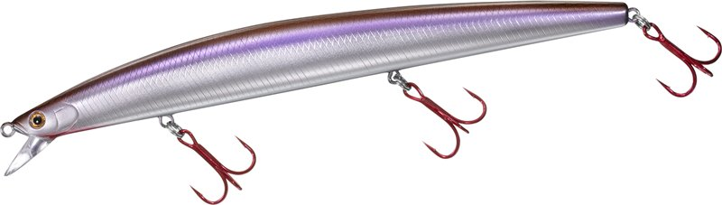
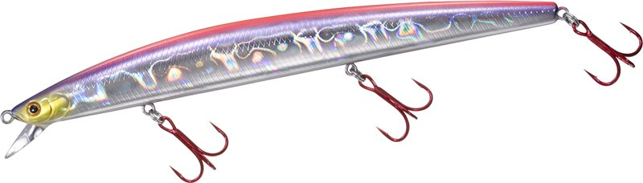
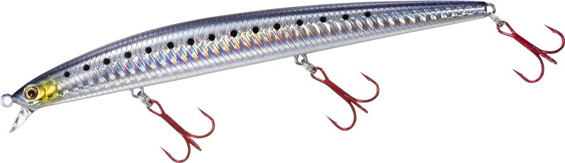
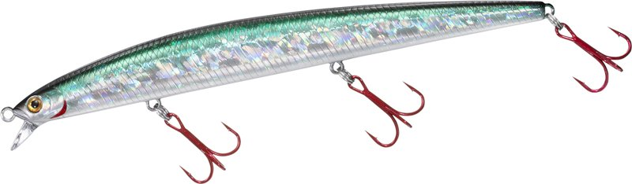

ショアラインシャイナーSL
（SHORELINE SHINER SL）
ショアラインシャイナーSLは、ダイワのシンキングミノーです。北海道でショアの海サクラ釣りが根付き始めた2000年代に、道内各地で高い実績を出した「ショアラインシャイナーSL LD-S」が、重心移動を改良して再登場しました。
実績を支えてきたスレンダーボディと、うねるようなS字ウォブンロールアクションはそのままに、重心移動をより確実にしたのが最大の特徴です。

画像出典:ダイワ公式HP
スペック
- メーカー
- DAIWA（ダイワ）
- タイプ
- シンキングミノー
- 全長
- 145mm（SL14LD-S）／170mm（SL17LD-S）
- 重さ
- 22.5g（SL14LD-S）／30.5g（SL17LD-S）
- フック
- ST-46赤 #5（SL14）／#4（SL17）×3本
- リング
- #3
- カラー
- 全6色
- ターゲット
- 海サクラ（サクラマス）・海アメ（アメマス）
- 価格
- 2,250円（SL14）／2,650円（SL17）（税抜）
▼今すぐチェック
ショアラインシャイナーSLの特徴
海サクラ創成期の名作が、重心移動を改良して再登場
-
サイレントダブルオシレートシステムVer.S
ウエイトを2個に分けて、できるだけ後ろまで動かせるようにした重心移動。ウエイトを支える2本のシャフトにSaqSas加工を施し、確実でなめらかに前後へ動く。SL17は前後のウエイトともタングステン。
-
巻き始めからすぐ泳ぐ
ルアーがわずかに傾いただけでウエイトが前に移動するので、巻き始めと同時にアクションがスタートする。キャスト時はウエイトが確実に後ろへ動き、飛行姿勢が安定する。
-
ゴトゴト音がしない
泳いでいる時に不要なゴトゴト音が出ない。魚の反応がシビアになるシーズン後半でも実績がある。トラウトに効くとされる赤針を標準装備。
ショアラインシャイナーSLの使い方
基本は、遠投して狙いのレンジまで沈め、スローからミディアムのスピードで一定に巻くことです。巻き始めからすぐにS字のウォブンロールで泳ぐので、着水後すぐに巻き始めても泳ぎ出しを逃しません。
反応が渋い時は、巻くスピードを落としてゆったりしたS字で見せたり、軽いトゥイッチを混ぜて変化をつけたりしましょう。
ショアラインシャイナーSLの得意な状況
北海道の海岸で海サクラ（サクラマス）や海アメ（アメマス）を狙う時に出番です。風が強く荒れやすい日も多い北海道の海でも、「しっかり飛び、破綻せず泳ぎ切る」バランスになっています。
スリムなシルエットで遠投でき、S字の泳ぎでスレた魚にも口を使わせられるのが強み。板鱒（大型のサクラマス）や大型の海アメもよく釣れるミノーです。
ワンポイント
向かい風や横風が強い日は、SL17を選び、着水したら一瞬糸ふけを取ってから巻き始めると、タングステンの重心移動で飛距離を出しながら、泳ぎ出しのタイミングも逃しません。
SL14とSL17の使い分け
| モデル | 全長／ |
フック | 価格 |
こんな |
|---|---|---|---|---|
| SL14LD-S | 145mm／ |
ST-46赤 #5 | 2,250円 | 基本の |
| SL17LD-S | 170mm／ |
ST-46赤 #4 | 2,650円 | 風が |
スペックはダイワ公式HPの記載より。
人気カラー
ショアラインシャイナーSLの人気カラーを紹介します。

アルミッシュオオナゴ海サクラの定番。くすんだ鈍い反射でスレにも強い。

桜ピンクアピール力の高いピンクバック。マズメや少し濁った時に。

レーザーマイワシギラギラ光るイワシやニシンがいる時に。

HITグリーン日本海側で人気のグリーンバック。ローテーションに。
※全6色。ほかにレーザー北海カタクチ・スケミラーがあります。
画像出典:ダイワ公式HP
▼今すぐチェック
ショアラインシャイナーSLに似ているルアー
-
 ショアラインシャイナーZ バーティスR 125F-SSR
ダイワ
詳細はこちら＞
ショアラインシャイナーZ バーティスR 125F-SSR
ダイワ
詳細はこちら＞
同じショアラインシャイナーのフローティングミノー。
-
 タイドミノースリム148F
DUO
詳細はこちら＞
タイドミノースリム148F
DUO
詳細はこちら＞
スリムなロングミノー。浅い場所をゆっくり引きたい時に。
-
 ブローウィン140
ブルーブルー
詳細はこちら＞
ブローウィン140
ブルーブルー
詳細はこちら＞
飛距離の出るシンキングミノー。広い範囲を探す時に。